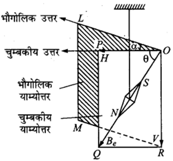
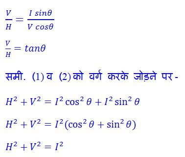

- अनुचुंबकीय पदार्थ
- लोहचुंबकीय पदार्थ
- प्रति-चुंबकीय पदार्थ
उदाहरण: एल्युमिनियम (Al), क्रोमियम (Cr), प्लेटिनम (Pt), मैग्नीशियम (Mg)।
गुण:
- इनका चुंबकीय आघूर्ण धनात्मक परन्तु बहुत छोटा होता है।
- चुंबकीय क्षेत्र हटाने पर इनका चुंबकीय प्रभाव समाप्त हो जाता है।
- इनकी चुंबकीय आपेक्षिक पारगम्यता (μr) थोड़ी अधिक होती है (>1)।
- इनकी चुंबकीय संवेदनशीलता (χ) धनात्मक और छोटी होती है।
उदाहरण: लोहा (Fe), कोबाल्ट (Co), निकेल (Ni)।
गुण:
- इनका चुंबकीय आघूर्ण बहुत बड़ा होता है।
- चुंबकीय क्षेत्र हटाने पर भी इनमें चुंबकत्व बना रहता है (हिस्टैरिसिस गुण)।
- इनकी चुंबकीय आपेक्षिक पारगम्यता (μr) बहुत बड़ी होती है (>1)।
- इनकी चुंबकीय संवेदनशीलता (χ) धनात्मक तथा बहुत अधिक होती है।
- इनका प्रयोग स्थायी चुंबक बनाने में किया जाता है।
उदाहरण: तांबा (Cu), चाँदी (Ag), सोना (Au), बिस्मथ (Bi)।
गुण:
- इनका चुंबकीय आघूर्ण ऋणात्मक और बहुत छोटा होता है।
- चुंबकीय क्षेत्र हटाने पर इनका प्रभाव पूरी तरह समाप्त हो जाता है।
- इनकी चुंबकीय आपेक्षिक पारगम्यता (μr) थोड़ी कम होती है (<1)।
- इनकी चुंबकीय संवेदनशीलता (χ) ऋणात्मक और छोटी होती है।
| क्रमांक | अनुचुंबकीय पदार्थ | लोहचुंबकीय पदार्थ | प्रति-चुंबकीय पदार्थ |
|---|---|---|---|
| 1 | इनकी चुंबकीय पारगम्यता एक से थोड़ी अधिक होती है। | इनकी चुंबकीय पारगम्यता एक से बहुत अधिक होती है। | इनकी चुंबकीय पारगम्यता एक से थोड़ी कम होती है। |
| 2 | इनकी चुंबकीय संवेदनशीलता (χ) धनात्मक और छोटी होती है। | इनकी चुंबकीय संवेदनशीलता (χ) धनात्मक और बहुत अधिक होती है। | इनकी चुंबकीय संवेदनशीलता (χ) ऋणात्मक और छोटी होती है। |
| 3 | ये बाहरी चुंबकीय क्षेत्र को अल्प आकर्षित करते हैं। | ये बाहरी चुंबकीय क्षेत्र को प्रबल रूप से आकर्षित करते हैं। | ये बाहरी चुंबकीय क्षेत्र को प्रतिकर्षित करते हैं। |
| 4 | उदाहरण: प्लैटिनम, मैंगनीज। | उदाहरण: लोहा, कोबाल्ट, निकेल। | उदाहरण: तांबा, सोना, चाँदी, जस्ता। |
| क्रमांक | नरम लोहा | स्टील |
|---|---|---|
| 1 | इसे आसानी से चुंबकीय बनाया जा सकता है। | इसे चुंबकीय बनाने में कठिनाई होती है। |
| 2 | यह अस्थायी चुंबक के लिए उपयुक्त है। | यह स्थायी चुंबक के लिए उपयुक्त है। |
| 3 | चुंबकीयता शीघ्र उत्पन्न होती है और शीघ्र नष्ट हो जाती है। | चुंबकीयता धीरे-धीरे उत्पन्न होती है और लंबे समय तक बनी रहती है। |
| 4 | ह्रास बहुत कम होता है। | ह्रास अधिक होता है। |
| 5 | उपयोग: विद्युत चुंबक, ट्रांसफार्मर की कोर, रिले आदि। | उपयोग: स्थायी चुंबक, कम्पास सुई, मोटर आदि। |
उदाहरण:
लोहा → 770°C
निकेल → 360°C
कोबाल्ट → 1150°C
- अवशिष्ट चुंबकत्व :- चुंबकीय क्षेत्र हटाने के बाद पदार्थ में शेष बचा चुंबकत्व अवशिष्ट चुंबकत्व कहलाता है।
- धारणशीलता :- वह गुण जिसके कारण कोई पदार्थ चुंबकीय क्षेत्र हटने पर भी कुछ मात्रा में चुंबकत्व बनाए रखता है धारणशीलता कहलाता है।
- निष्क्रिय हानि :- चुंबकत्व को बार-बार बदलते समय चुंबकीय पदार्थ द्वारा उष्मा के रूप में खोई गई ऊर्जा को निष्क्रिय हानि कहते हैं।
- शैथिल्य हानि :- बदलते चुंबकीय क्षेत्र में चालक के भीतर उत्पन्न धारा (एडी करंट) के कारण उत्पन्न ऊष्मा से हुई ऊर्जा हानि को शैथिल्य हानि कहते हैं।
प्रश्न: निम्न को परिभाषित करो

- चुंबकीय अक्ष - पृथ्वी के चुंबकीय उत्तर एवं दक्षिण ध्रुवों को मिलाने वाली काल्पनिक रेखा को चुंबकीय अक्ष कहते हैं।
- चुंबकीय याम्योत्तर - पृथ्वी की सतह पर वह काल्पनिक तल, जिसमें चुंबकीय अक्ष एवं ऊर्ध्वाधर रेखा स्थित होती है, उसे चुंबकीय याम्योत्तर कहते हैं।
- चुंबकीय निरक्ष - पृथ्वी की सतह पर वह रेखा, जहाँ चुंबकीय सुई क्षैतिज स्थिति में रहती है और झुकाव शून्य होता है, चुंबकीय निरक्ष कहलाती है।
- चुंबकीय ध्रुव - पृथ्वी की सतह पर वे स्थान, जहाँ चुंबकीय सुई का झुकाव 90° होता है, उन्हें चुंबकीय ध्रुव कहते हैं।
- भौगोलिक अक्ष - पृथ्वी के उत्तर एवं दक्षिण ध्रुवों को मिलाने वाली काल्पनिक रेखा को भौगोलिक अक्ष कहते हैं। यही पृथ्वी की घूर्णन धुरी है।
- भौगोलिक याम्योत्तर - पृथ्वी की सतह पर वह काल्पनिक तल, जिसमें भौगोलिक अक्ष एवं ऊर्ध्वाधर रेखा स्थित होती है, उसे भौगोलिक याम्योत्तर कहते हैं।
- नमन कोण :- किसी स्थान पर पृथ्वी के चुम्बकीय क्षेत्र की परिणामी तीव्रता क्षैतिज के साथ जो कोण बनाती है, उसे नमन कोण कहते हैं। इसे θ द्वारा दर्शाते हैं।
- दिक्पात का कोण :- किसी स्थान पर चुम्बकीय याम्योत्तर और भौगोलिक याम्योत्तर के बीच के कोण को दिक्पात का कोण कहते हैं।
भूमध्य रेखा पर यह 0 होता है।
चुंबकीय ध्रुवों पर यह 90° होता है।


मान लीजिए कि किसी स्थान पर पृथ्वी का कुल चुंबकीय क्षेत्र I है। यह चुंबकीय क्षेत्र क्षैतिज तल के साथ θ कोण बनाता है तब
क्षैतिज घटक
H = I cosθ ……. (1)
ऊर्ध्वाधर घटक
V = I sinθ ……. (2)
समी. (2) में (1) का भाग देने पर-

- सम दिक्पाती रेखाएँ :- ऐसे स्थानों को मिलाने वाली रेखाएँ, जहाँ दिक्पात कोण का मान समान होता है, समदिक्पाती रेखाएँ कहलाती हैं।
- शून्य दिक्पाती रेखाएँ :- शून्य दिक्पात कोण वाले स्थानों को मिलाने वाली रेखाएँ शून्य दिक्पाती रेखाएँ कहलाती हैं।
- सम नमन रेखाएँ :- समान नमन कोण वाले स्थानों को मिलाने वाली रेखाएँ सम नमन रेखाएँ कहलाती हैं।
- अनत या चुम्बकीय निरक्ष रेखाएँ :- शून्य नमन कोण वाले स्थानों को मिलाने वाली रेखाएँ अनत या चुम्बकीय निरक्ष रेखाएँ कहलाती हैं।
- सम बल रेखाएँ :- ऐसे स्थानों को मिलाने वाली रेखाएँ, जहाँ चुम्बकीय क्षेत्र के क्षैतिज घटक H का मान समान होता है, सम बल रेखाएँ कहलाती हैं।
1. पृथ्वी के चुंबकीय क्षेत्र का कारण है – उत्तर: पृथ्वी के भीतर विद्युत धाराएँ
2. पृथ्वी के चुंबकीय क्षेत्र की तीव्रता लगभग होती है – उत्तर: 10⁻⁴ T
3. पृथ्वी का चुंबकीय विषुवत वृत्त कहलाता है – उत्तर: चुंबकीय विषुवत वृत्त
4. चुंबकीय द्विध्रुव आघूर्ण का मात्रक है – उत्तर: A·m²
5. बार मैग्नेट के समान होता है – उत्तर: धारा वलय
6. चुंबकीय आघूर्ण M और क्षेत्र तीव्रता B पर लगने वाला बलाघूर्ण है – उत्तर: MB sinθ
7. चुंबकीय फ्लक्स का SI मात्रक है – उत्तर: वेबर (Wb)
8. 1 Tesla = – उत्तर: 1 Wb/m²
9. पृथ्वी का चुंबकीय विक्षेप कोण किसके बीच का कोण है? – उत्तर: भौगोलिक उत्तर व चुंबकीय उत्तर
10. मुक्त चुंबकीय ध्रुव प्रकृति में – उत्तर: नहीं पाए जाते
11. चुंबकीय रेखाएँ आपस में – उत्तर: कभी नहीं काटतीं
12. चुंबकीय आघूर्ण निर्भर करता है – उत्तर: धारा वलय का क्षेत्रफल, धारा, कुंडली की संख्या
13. चुंबकीय उपग्रह का उपयोग किया जाता है – उत्तर: पृथ्वी का चुंबकीय क्षेत्र मापने हेतु
14. चुंबकीय ध्रुवीयता का नियम है – उत्तर: ध्रुव अकेले नहीं होते
15. एक आदर्श चुंबक में उत्तरी व दक्षिणी ध्रुव – उत्तर: हमेशा युग्म में पाए जाते हैं।
- चुंबकीय आघूर्ण = धारा × क्षेत्रफल
- पृथ्वी के चुंबकीय क्षेत्र की तीव्रता लगभग 10⁻⁴ T होती है।
- चुंबकीय फ्लक्स का मात्रक वेबर (Wb) होता है।
- ध्रुवों पर नमन कोण शून्य होता है।
- भूमध्यरेखा पर नमन कोण 90° होता है।
- चुंबकीय बल रेखाएँ एक-दूसरे को काटती हैं – गलत
- पृथ्वी का चुंबकीय क्षेत्र केवल घूर्णन के कारण है – गलत
- बार मैग्नेट को धारा वलय के तुल्य माना जा सकता है – सही
- चुंबकीय ध्रुव सदैव युग्म में पाए जाते हैं – सही
- चुंबकीय फ्लक्स का मात्रक टेस्ला है – गलत (सही वेबर है)